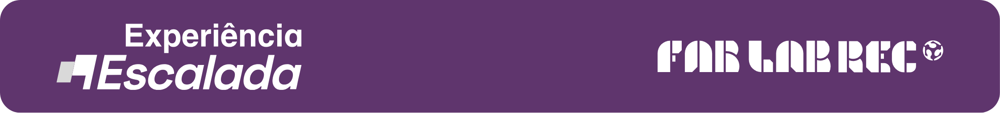

Olá, Maker!
A inovação acontece quando diferentes habilidades se encontram. Você está pronto para descobrir qual é o seu papel na Experiência Escalada?
Tempo estimado: 3 minutos
Pergunta 1 de 8
Carregando...
✨
Seu Perfil Maker é